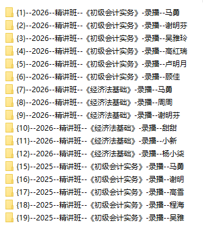

Journal · 2026-04-20
微信聊天记录
蒋鹏伟 : 但我现在有点担心当时坐在我们旁边的同学会和体育老师说 2026年4月20日 16:06 蒋鹏伟 : 你周三怎么要回九江 引用：我打赌，周三我能活着回到紫菘[加油][加油][加油] 2026年4月20日 16:06 吉姆哈克 : 我知会他了，他问我第几名，多长时间？我就直接跟他说，我是看着前面同学跑的，分数有点虚 2026年4月20日 16:07 吉姆哈克 : 过后我还特别说了一下，请你不要告诉老师，这真是有点虚[脸红][脸红][脸红] 2026年4月20日 16:07 吉姆哈克 : 他要是乱打小报告，就不是一个人承担责任了，我前面的同学也要倒霉[发怒][发怒][发怒] 2026年4月20日 16:07 吉姆哈克 : 你下周干脆就别来了，老师带那么多学生，他记不住名字的 引用：但我现在有点担心当时坐在我们旁边的同学会和体育老师说 2026年4月20日 16:08 吉姆哈克 : 今天跑的时候，不就有一个瘦瘦的同学来参加了吗，我感觉他很少来上课嘞 2026年4月20日 16:08 吉姆哈克 : 我要去看牙医，从小看着我长大的牙医[太阳][太阳][太阳] 引用： 你周三怎么要回九江 wxid**** 2026年4月20日 16:09 吉姆哈克 : 我直接就直了，我前面的同学，好像就少跑了一圈，估计把他注意力转离了 引用：我知会他了，他问我第几名，多长时间？我就直接跟他说，我是看着前面同学跑的，分数有点虚 2026年4月20日 16:09 吉姆哈克 : 我感觉旁边那个同学还挺好的，他人挺老实的，挺踏实专注的。他敢乱打小报告，我就像对付刘同学一样对付他[旺柴][旺柴][旺柴] 2026年4月20日 16:10 吉姆哈克 : 我本来是要找你要福气的 引用：说不定今年会很有福气呢[破涕为笑][破涕为笑][破涕为笑] 2026年4月20日 16:12 吉姆哈克 : 快点祝福我，平安归来[吃瓜][吃瓜][吃瓜] 2026年4月20日 16:13 吉姆哈克 : 人生首次星夜奔驰[月亮][月亮][月亮] 2026年4月20日 16:13 吉姆哈克 : 有错别字，我直接就“说”了 引用：我直接就直了，我前面的同学，好像就少跑了一圈，估计把他注意力转离了 2026年4月20日 16:14 蒋鹏伟 : 祝福你平安归来 2026年4月20日 16:15 吉姆哈克 : 不要告诉何导，我又离开武汉不报备了，还是星夜离汉[奸笑][奸笑][奸笑] 2026年4月20日 16:16 吉姆哈克 : [表情] 2026年4月20日 16:17

大宝 : 分好的 2026年4月20日 17:57 吉姆哈克 : 对呀，你都分好了，那就把除了两个老师之外的都删掉呗 引用：[图片] 2026年4月20日 17:58 吉姆哈克 : 认准小马哥，认准谢老师 2026年4月20日 17:58 吉姆哈克 : 之了的学员，好多就听这两个老大哥 2026年4月20日 17:59 吉姆哈克 : 这也正常嘛，大平台大品牌就这样 引用：这一个课就1TB了 2026年4月20日 17:59 吉姆哈克 : 三套课，不就3TB呗，也不多呀 2026年4月20日 17:59 吉姆哈克 : 再买个超级无敌豪华大会员呗 2026年4月20日 17:59 吉姆哈克 : 好吧好吧，这三套课程，我就给你留着 引用：1. 之了课堂所有的已购课程 2. 之了学吧所有的已购课程 3. 我本地的亿学编程所有的课程及课件 2026年4月20日 18:01 吉姆哈克 : 等你哪天有足够的空间了，找我要就行[太阳][太阳][太阳] 2026年4月20日 18:01 吉姆哈克 : [表情] 2026年4月20日 18:02 吉姆哈克 : 或者说，等你哪天接到单子了，临时找我要也行。但要给我个小红包，就像我当初给你的一样[发呆][发呆][发呆] 引用：等你哪天有足够的空间了，找我要就行[太阳][太阳][太阳] 2026年4月20日 18:03 大宝 : 这个没问题 2026年4月20日 18:07
吉姆哈克 : 我的电脑成了龙虾服务器 2026年4月20日 21:02 二舅(syfsgg) : [强] 2026年4月20日 21:02 吉姆哈克 : 在高中，手工整理161个日程，是个非常枯燥和麻烦的事 引用：****** ****** 2026年4月20日 21:03 吉姆哈克 : 上大学后，时代就变啦 2026年4月20日 21:03 吉姆哈克 : [图片] 2026年4月20日 21:05 吉姆哈克 : [图片] 2026年4月20日 21:05 吉姆哈克 : [图片] 2026年4月20日 21:05 吉姆哈克 : 服务器在我手上 2026年4月20日 21:05 吉姆哈克 : 武汉科技的校友用不了高级功能，小龙虾处理不了他发过来的文件 2026年4月20日 21:05 吉姆哈克 : 我感觉拉他进群，他只能把我的龙虾，当作豆包一类的聊天助手用[破涕为笑][破涕为笑][破涕为笑] 2026年4月20日 21:06